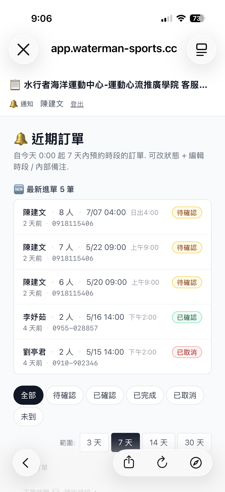

從需求出發，逐一解決
每一張卡片左邊是「我在自家網站遇到的真實痛點」，右邊是「在 AICMS 裡用什麼方式解決」。
新網站要重做 metadata、schema、breadcrumb、sitemap、robots、open graph、AEO 結構標記…… 更痛的是把客戶舊站（通常是 WordPress）內容搬過來， 手動 copy paste 就會把標題層級、圖片連結、SEO 設定全部弄亂。
- 整站匯入精靈：貼網址 → Edge Function 抓全站 → 媒體自動下載入庫
- AI 一鍵 AEO 重排版：8 種產業 preset，用 tool_use API 把舊內容重排成結構化區塊
- 內容版本備份（`content_versions`）：重排失敗可一鍵還原
- 自動 seed nav / breadcrumb / schema / canonical / sitemap / robots
- 實測：waterman-sports.com 匯入 31 pages + 1 post + 36 媒體，0 errors，45.8 秒
WordPress 雖然 no-code 但每次改主題就跑版，TipTap / Notion 雖然好用但不是為 SEO/GEO 而生。 客戶寫好文章，FAQ 段落要自己想、Schema 要自己埋、內部連結要自己找—— 真實情況是 90% 的客戶都不會做這件事。
- TipTap v2 編輯器+ shadcn/ui，所見即所得
- 17 種區塊變體（Hero / Features / Pricing / FAQ / CTA / Article 等），下拉就能插入
- AI 助手：多模型生成草稿 + 改寫 + 縮排 + 翻譯
- 即時 GEO 評分：寫到一半就告訴你哪段不夠結構化
- FAQ 建議 + 內部連結建議：AI 讀完內文後主動建議該補的問答
- Schema.org JSON-LD 自動生成，客戶完全不用碰 code
我自家用了十年的 Pinpoint Booking 外掛，每年要付 $70 USD 還動不動跟 WordPress 升級打架。 更核心的問題是：水上產業要的是「資源池」邏輯 （SUP 板 / 獨木舟 / 教練 / 場地各自有上限）， 不是「一個 slot 一個人」的醫療掛號邏輯。市面上沒有外掛同時支援兩種。
- Resource Pool 模型：可定義多種資源 + 並發上限，自動換算可預約量
- 後台月曆 / 列表 / 看板三種視圖，業務一眼看完全月
- 動態定價（平假日 / 旺季 / 加購）+ 月份 sync + 數量 input
- 訂單狀態細分（pending / confirmed / paid / canceled / no-show / completed）
- 員工可線上編輯訂單，含改時間、改數量、退款、退課
- 客戶確認頁帶 magic link，省掉「我有沒有預約成功」客服問題
傳統排班是主管 Excel 排好再廣播，每改一次都要重發。 水上活動旺季又常常臨時加團，需要「誰能帶就上來認」的靈活模式， 但約聘教練不會想學一套複雜後台 just for 排班。
- 排班系統直接讀預約後台的訂單，自動列出需要人手的團
- 員工自選團 / 候補名單：「我來帶」「我來助教」一鍵認領
- 權限細分：can_lead / can_assist / can_view_all / can_manage_groups
- 兼任「教練 + 管理員」的老闆視角也補上認領入口（dogfood 發現的洞）
- 候補名單系統，客滿時自動排隊、補位時自動通知
過去訂單跟工作通知都丟在 LINE 客服群組， 客戶訊息跟內部交辦混在一起，常常漏接。 員工在海邊不可能隨身帶筆電，需要的是「手機打開就能查訂單、改時間、報到」的工具。
- 獨立員工 portal 入口（`/staff/[tenantSlug]`），跟客戶 LINE 群完全分流
- PWA + RWD：iPhone 加到主畫面就像 App
- 手機優先設計：訂單列表 / 排班表 / 客戶聯繫資訊一頁可達
- QR 掃碼報到（客戶亮 QR、教練掃，3 秒 dedup 防誤觸）
- idempotent 報到：已報到再掃不報錯，現場壓力減半



一般 AI 客服只會聊天，客戶問完還要自己去網站下單， 80% 在這一步流失。同時知識庫要人工維護又會過時。 更前瞻的問題：以後 ChatGPT / Gemini 內建 connector 也能查我的網站， 現在不留接口，未來要重寫。
- 三來源 RAG 知識庫：網站內容 + 預約系統服務 + 客戶對話紀錄
- 對話內出 booking confirm card，客戶直接在聊天框完成下單
- 對話 → 評分 → 自學習候選 → 入正式 KB（持續進化）
- 真人轉接：複雜問題自動 handoff 到 LINE 客服
- MCP Gateway：每個 tenant 自動有一個 MCP server，未來 ChatGPT / Claude / Gemini connector 接得上
- 外站 iframe widget：純 static HTML 也能掛這套客服（ai-cms.cc 自己就在用）
每接一個新客戶要重跑：開 Supabase 專案、開 Cloudflare DNS、開 Zeabur service、 送 GSC 索引、設 OAuth、設 SMTP……光走完這套就要半天，還容易漏。 GSC 加 service account email 還會跳「找不到電子郵件」這種坑。
- Super-admin 的 Settings 1-4：AI / DNS / OAuth / Zeabur 部署 全部後台化
- 每項設定都有「測試連線」+ 完整啟用步驟說明，新手也能跑完
- GSC × Service Account 用 Site Verification API 繞道法（內建 runbook）
- Tenant 啟用流程：domain 加入 → Zeabur deploy → GSC sitemap 提交 一條 SOP 走完
- 馬上要做的：DNS 驗證 → 一鍵部署精靈（Phase F.2）
GA4 後台太複雜，我只想看「今天哪些頁、哪些縣市、哪些退出頁、IG 還是 FB 來的」， 而且要排除我自家 IP。另外有些客戶是 static 外站（不在 AICMS 裡跑）也想用同一套統計。
- 內建 Analytics：per-tenant + super-admin 跨站總覽
- 關鍵維度都做：縣市 / 退出頁 / 即時 / IG vs FB UA 補位
- 自家 IP 用 env 變數排除（不污染數據）
- 外站 tracking：is_internal tenant + body tenant_slug + Origin 驗證，純 HTML 站也能用
- 保留 GA4 plug-in 並存，不強迫客戶二擇一